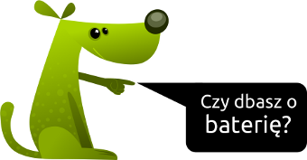

Chociaż aktualnego Debiana (a w zasadzie CrunchBang) mam już zainstalowanego od dłuższego czasu, to dopiero teraz mając trochę czasu wolnego zabieram się za dopieszczane konfiguracji, oraz naprawę tego co nie działa, lub działa niezbyt dobrze. Dziś na pierwszy ogień poszedł touchpad.
Kategoria | Howto

Tagi: dwuklik, nie działa dwuklik, Synaptics, taczpad, tapping, touchpad
Naprawa “dwukliku” (tapping) w touchpadzie sterowanym przez Synaptics
Opublikowano 01 kwietnia 2013 przez Franek

Tagi: bootowanie iso z pendrive, GRUB, instalacja grub na pendrive, Linux, Linux na pendrive
Uruchamianie obrazów ISO z pendrive (multiboot)
Opublikowano 27 grudnia 2012 przez Franek
Wydaje mi się, że wypalanie obrazów ISO na krążkach CD/DVD już od jakiegoś czasu stało się passé. Wprawdzie istnieją wyjątki, ale czy ktoś jeszcze wypala krążki po to aby przetestować nowe wydanie jakiejś dystrybucji, czy zainstalować system?

Tagi: automatyczne podlewanie ogródka, elektrozawór, konkurs linksys, nawadnianie ogródka, ogród, OpenWRT, podlewanie ogródka, router
Router podlewa mi ogródek
Opublikowano 01 czerwca 2011 przez Franek
Autorem wpisu jest Łukasz S., ten wpis bierze udział w konkursie – pozostałe prace konkursowe.
Linux w domowych routerach może mieć wiele zastosowań, także nietypowych. Możliwości jakie daje popularny sprzęt i dostępne oprogramowanie OpenSource są olbrzymie, a tworzenie ciekawych projektów jest coraz prostsze, sprowadzając się często do łączenia gotowych “klocków” w jedną całość. Okazuje się, że domowy router nadaje się nawet do stworzenia systemu mogącego pretendować do miana “inteligentnego domu”. Czytaj dalej »
Tagi: CISCO, DD-WRT, Howto, instalacja dd-wrt na wrt160nl, Linksys, router, Sprzęt, WRT160NL
Instalacja DD-WRT na routerze Linksys WRT160NL howto
Opublikowano 22 maja 2011 przez Franek
Jako posiadacz WRT160NL nie długo cieszyłem się z uruchomionego na nim oryginalnego oprogramowania. Nie zdążyłem się nawet pokrótce się z nim zapoznać, bo natychmiast po włączeniu routera i zalogowaniu się na jego interfejs www przystąpiłem do wgrania alternatywnego oprogramowania w postaci DD-WRT.
Tagi: BIS, blackberry, blackberry bez bis, blackberry service book, mms, mms bez bis, Play, tcp, wap
Bez BIS da się żyć! Jak ustawić swój BlackBerry aby działał w sieci Play?
Opublikowano 05 marca 2011 przez Franek
Korzystanie z terminala BlackBerry kiedy nie ma się dostępu do BIS/BES często nie jest wygodne. Dostęp do wielu funkcjonalności BlackBerry OS i innych aplikacji jest ograniczony, czy więc niemożliwy. Da się jednak żyć nie posiadając dostępu do usług BlackBerry, można korzystać z Internetu za pomocą WAP i TCP jak i odbierać i wysyłać MMSy, należy tylko odpowiednio skonfigurować terminal, a konkretnie Service Book. Poniżej przedstawię jak to zrobić dla sieci Play.
Tagi: aktualizacja, bb, bbsak, blackberry, blackberry 9000 bold, blackberry os, blackberry os 5, Windows
Aktualizacja BlackBarry OS do wersji 5 na 9000 Blold za pomocą BBSAK
Opublikowano 05 marca 2011 przez Franek
Nie można skorzystać z tego poradnika używając systemu innego niż Microsoft Windows. Ja aktualizację przeprowadzałem na Windows 7 Starter, warto było go zostawić na dysku. ;)
Aktualizacja jest bardzo prosta i przebiega w kilku krokach, jednak niesie ona za sobą pewne ryzyko które to ponosisz na własną odpowiedzialność. :P
Tagi: anonimowość, bezpieczeństwo, Freenet, instalacja, konfiguracja, Tor
Freenet co to jest i jak używać na Linuxie
Opublikowano 16 września 2010 przez Franek
Zachęcam do zapoznania się również z wpisem Zachowaj anonimowość w Internecie, zainstaluj Tor i Privoxy.
Freenet – zdecentralizowana anonimowa sieć dystrybucji informacji, tworzona w taki sposób, aby zapewnić jak największe bezpieczeństwo i prywatność użytkowników. Wykorzystuje łącza i dyski jej użytkowników, analogicznie do sieci torrent. Jej implementacja jest napisana w oparciu o zasadę Open Source (kod źródłowy jest dostępny dla wszystkich użytkowników). Projekt jest rozwijany od 2000 roku.
Tagi: Debian, dwm, install dwm, tiling, tiling window manager, Ubuntu
dwm: dynamiczny menedżer okien dla X11
Opublikowano 18 sierpnia 2010 przez Franek
dwm jest to kafelkowy (tiling window manager) menedżer okien który jest bardzo podobny do wmii, lecz wewnętrznie posiada prostszą budowę. dwm obsługuje wiele obszarów roboczych i w przeciwieństwie do Ratpoison umożliwia przenoszenie i zmianę rozmiaru okna za pomocą myszki. Został on napisany w C. Jednym z założeń projektu jest nigdy nie przekroczyć 2000 linii kodu, a wszystkie opcje przeznaczone do konfiguracji są umieszczone w jednym pliku nagłówkowym.

Tagi: Bash, curl, logowanie, wget
Skrypty logowania do portali web…
Opublikowano 16 sierpnia 2010 przez rryk
Tytułem wstępu:
Wpis pochodzi z forum linux360.pl, gdzie mój poprzedni wątek o “podobnym” temacie zniknął, niektórzy się pewnie domyślają dlaczego, inni niekoniecznie. Tak czy siak moje intencje były dobre i miały szlachetne pobudki. Zaś po krótkiej rozmowie z moderatorem postanowiłem, że napiszę to tak jak powinno być napisane, a że może okazać się to niezwykle przydatne udostępniam to także na innych forach. ;p

Tagi: DEB, Gajim, IM, kompilacja, Komunikator, Paczka DEB, Paczki DEB
Kompilacja najnowszego Gajima z Mercurial [paczka DEB dla Ubuntu 10.04]
Opublikowano 14 sierpnia 2010 przez Franek
Gajim – wieloplatformowy klient XMPP/Jabbera napisany w Pythonie z wykorzystaniem biblioteki GTK+. Nazwa Gajim jest akronimem rekurencyjnym od nazwy Gajim is a jabber instant messenger.
Gajim działa pod Linuksem, BSD i Windows. Jest wolnym oprogramowaniem wydanym na licencji GPL.
Celem twórców Gajima jest stworzenie w pełni funkcjonalnego i łatwego w użyciu klienta XMPP w oparciu o bibliotekę GTK+. Gajim nie wymaga GNOME do uruchomienia, ale doskonale pracuje w tym środowisku.
Tagi: anonimowość, bezpieczeństwo, instalacja, jak używać tor, konfiguracja, Privoxy, Tor, tor anonimowość, tor instalacja, tor konfiguracja
Zachowaj anonimowość w Internecie, zainstaluj Tor i Privoxy
Opublikowano 08 sierpnia 2010 przez Franek
Zachęcam do zapoznania się również z wpisem Freenet co to jest i jak używać na Linuxie.
Tor (z angielskiego The Onion Routing, czyli Trasowanie Cebulowe) jest siecią wirtualnych tuneli, które pozwalają użytkownikom na zwiększenie prywatności i bezpieczeństwa w Internecie. System ten pozwala twórcom oprogramowania na tworzenie narzędzi komunikacyjnych z wbudowanymi funkcjami ochrony prywatności. Tor dostarcza bazę dla wielu aplikacji, dzięki którym zarówno osoby prywatne, jak i organizacje mogą dzielić się informacjami w publicznych sieciach, bez obawy o naruszenie prywatności.

Tagi: konfiguracja play, Play, play linux, Play Online, play ubuntu, ppp0, wvdial
wvdial konfiguracja dla połączeń z Play Online
Opublikowano 13 lipca 2010 przez Franek
Network Manager zaczął mnie wnerwiać, czasami nie widzi modemu, przez co nie chce łączyć się przez ppp0. Postanowiłem pozbyć się go. W końcu i tak łączę się tylko z Play Online oraz jedną siecią po eth, więc Network Manager wydał mi się zbędny. Czytaj dalej »

Tagi: FastCGI, instalacja nginx, MySQL, nginx, nginx konfiguracja php, nginx php, nginx php mysql, nie działa php nginx, spawn-fcgi
Instalacja serwera WWW nginx z obsługą PHP przez FastCGI i MySQL
Opublikowano 01 czerwca 2010 przez Franek
nginx (wymawiamy jako engine x) jest to serwer WWW oraz serwer proxy dla HTTP i IMAP/POP3. Zaprojektowany on został z myślą o wysokiej dostępności w silnie obciążonych serwisach, podczas jego projektowania duży nacisk kładziono na jego skalowalność oraz niskie wymagania sprzętowe. Serwer ten nie posiada takiej popularności jak Apache, wykorzystywany jest jednak na wielu dużych serwisach między innymi nasza-klasa.pl, wordpress.com czy sourceforge.com. nginx napisany został przez Igora Sysojewa i wydawany jest na licencji BSD. Czytaj dalej »

Tagi: gmpc, jamendo, lastfm, librefm, mpd, scrobbler
Konfiguracja MPD + scrobbler Last.fm / Libre.fm / Jamendo
Opublikowano 31 maja 2010 przez Franek
Music Player Daemon w skrócie MPD to bardzo specyficzny multiplatformowy odtwarzacz muzyczny ponieważ działa on jako serwer dźwięku. Spisuje się on bardzo dobrze, zużywa bardzo mało zasobów, odtwarza popularne formaty muzyczne (MP3, MP2, MP4, ACC, MOD, WAV, Ogg Vorbis). Przy czym pozwala, na wyszukiwanie utworów, zarządzanie playlistami i obsługuje tagi muzyczne. Do jego obsługi potrzebna jest aplikacja kliencka, która łączy się z serwerem, co pozwala na jego kontrolę. Dzięki temu MPD może pracować na domowym serwerku, a my kontrolujemy go zdalnie z desktopa. Czytaj dalej »

Tagi: DEB, kompilacja, kompilacja rtorrent, konfiguracja rtorrent, Paczka DEB, Paczki DEB, rtorrent, svn
Kompilacja rTorrent z SVN z kolorowym interfejsem w CLI [gotowe paczki deb]
Opublikowano 31 maja 2010 przez Franek
rTorrent – jest tekstowym klientem sieci BitTorrent na licencji GPL, rozwijanym przez Jariego Sundella (pseudonim Rakshasa). Został napisany w języku C++ z nastawieniem na wysoką wydajność i poprawny kod. Wykorzystuje bibliotekę libTorrent (własną, nie libtorrent z sourceforge) dla systemów uniksowych. Interfejs użytkownika jest napisany w oparciu o bibliotekę ncurses. Własna biblioteka libTorrent różni się od innych wersji transmisją danych bezpośrednio między stronami pamięci zmapowanymi przez funkcję mmap() a stosem sieciowym. Na łączach o wysokiej przepustowości potrafi wysyłać dane kilkukrotnie szybciej niż oficjalny klient BitTorrent. Pakiety rTorrenta są dostępne na różne dystrybucje Linuksa i Uniksa oraz można go uruchamiać i kompilować w prawie każdym systemie operacyjnym zgodnym z POSIX, takim jak na przykład FreeBSD. Dzięki interfejsowi tekstowemu można używać go w programach typu screen i dtach. Obsługuje zachowywanie sesji i pozwala użytkownikom na dodawanie i usuwanie torrentów. Oferuje także częściowe ściąganie torrentów zawierających wiele plików. Od wersji 0.7.0 obsługuje także szyfrowanie. rTorrent wspiera również rozproszone tablice mieszające i super-seeding. rTorrent może być obsługiwany przy pomocy XML-RPC. – Osobiście bardzo lubię tą aplikację i jest ona jedyną jaką wykorzystuję do pobierania nowych dystrybucji GNU/Linuxa z sieci BitTorrent ;) Czytaj dalej »

MiniBlog
- Ewolucja wyglądu Androida
18 czerwca 2013 | 19:33Czyli jak z brzydkiego kaczątka powoli rodzi się łabędź ;-)
Dalej »
- Open Source Day 2013
14 maja 2013 | 10:08Dalej »
- Akcja darmowego hostingu [UPDATE]
5 kwietnia 2013 | 22:04Dalej »
-
 Archiwum MiniBlog »
Archiwum MiniBlog »
-
ARCHIWUM
- wrzesień 2022 (1)
- grudzień 2013 (1)
- listopad 2013 (2)
- wrzesień 2013 (1)
- czerwiec 2013 (1)
- maj 2013 (4)
- kwiecień 2013 (4)
- marzec 2013 (1)
- luty 2013 (1)
- styczeń 2013 (1)
- grudzień 2012 (15)
- listopad 2012 (7)
- październik 2012 (4)
- wrzesień 2012 (4)
- sierpień 2012 (7)
- lipiec 2012 (19)
- czerwiec 2012 (3)
- maj 2012 (1)
- kwiecień 2012 (5)
- marzec 2012 (4)
- luty 2012 (12)
- styczeń 2012 (13)
- grudzień 2011 (10)
- listopad 2011 (6)
- październik 2011 (2)
- wrzesień 2011 (1)
- sierpień 2011 (2)
- lipiec 2011 (2)
- czerwiec 2011 (8)
- maj 2011 (32)
- kwiecień 2011 (11)
- marzec 2011 (10)
- styczeń 2011 (2)
- listopad 2010 (4)
- październik 2010 (12)
- wrzesień 2010 (17)
- sierpień 2010 (32)
- lipiec 2010 (10)
- czerwiec 2010 (3)
- maj 2010 (7)
- kwiecień 2010 (8)
- lipiec 2009 (5)
- czerwiec 2009 (2)
- marzec 2009 (15)
- luty 2009 (21)
- styczeń 2009 (5)